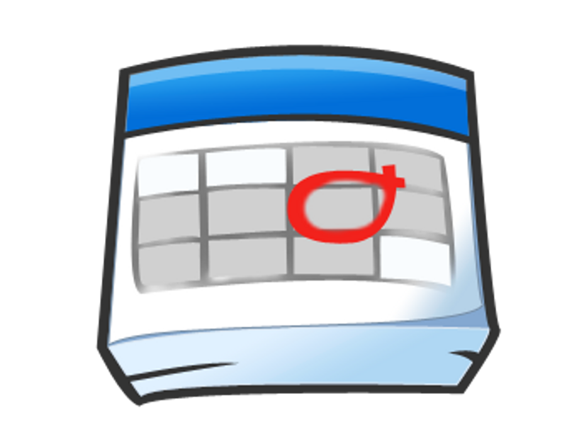

1. Introducción
He creado un calendario compartido con todos vosotros/as que podréis ver cuando entréis a la aplicación y que se llama Gestión del tiempo. Vamos a realizar una serie de operaciones básicas, siempre dentro de este calendario, sobre el que todos nosotros podemos interactuar (leer/modificar/añadir eventos).
2. Consideraciones iniciales
Vamos a preguntarnos algunas cuestiones acerca de este calendario, y lo configuraremos un poco según nos interese.
3. Adición/modificación de eventos: evento puntual.
Vamos a practicar la adición/modificación de eventos. Empecemos por unos más simple y posteriormente continuaremos con algunos más complicados.
Introduce un nuevo evento en tu calendario personal con la siguiente información:
Nombre del evento: Reunión con el Vicerrector
Día y hora: Martes 12 de Junio
Duración máxima: 1'30h
Lugar: Rectorado
Notificar: Avisar con una hora de antelación por SMS.
- ¿Quién tiene acceso a esa información?
- Sólo con el ratón, cambia el día y hora de ese evento a otro día a otra hora (la que tú quieras).
- Modifica el evento, pásalo al calendario compartido "Gestión del tiempo"
4. Adición/modificación de eventos: evento puntual.
Introduce un nuevo evento en tu calendario personal con la siguiente información:
Nombre del evento: Reunión con el Vicerrector
Día y hora: Martes 12 de Junio
Duración máxima: 1'30h
Lugar: Rectorado
- ¿Quién tiene acceso a esa información?
- Sólo con el ratón, cambia el día y hora de ese evento a otro día a otra hora (la que tú quieras).
- Modifica el evento, pásalo al calendario compartido "Gestión del tiempo"
4. Envío de correo electrónico
Envíame un correo electrónico con las fotos y la información que has encontrado (utiliza la técnica de copiar/pegar).
¡Ya hemos terminado! ¿Fácil no?